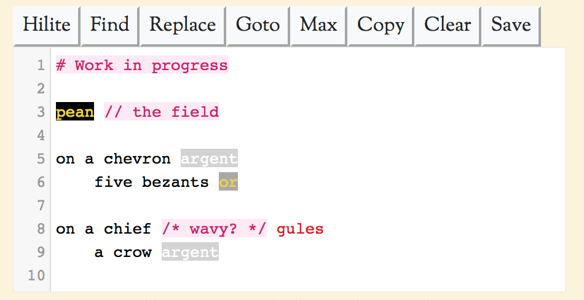

If all that you need to type is "azure, a bend or" then all you really need is a textbox. DrawShield however rewards experimentation and encourages longer blazons, especially those involving multiple quarterings. To cater for these situations, if your browser is sufficiently modern then the normal text box for blazon entry is replaced by a full fledged code editing component. This is provided by CodeMirror.net with custom extensions to cater for the special requirements of blazonry.
If you are familiar with code editing the CodeMirror editor uses a set of shortcut keys similar to SublimeText, however if you want more detail then the editor provides the following features:
As you enter your blazon the text may be given different colours to indicate its role within the blazon. Most usefully perhaps, the main tinctures will be displayed in their correct colours, but comments will also be highlighted, along with quarterings and various other language constructs.
I am aware that this feature is not fully implemented yet, and is prone to sometimes mis-colouring some syntax. If you do not find it helpful it can be turned using the "Hilite" button at the top of the editing window, or by using the shortcut key ctrl-H.
The editing area will expand as required - you can just keep typing on the same line or press enter to create a new line. You can also use shortcut keys alt-enter to create a new line below the current one, or shift-alt-enter to create a new line above. You can arrange your blazon however you like, line breaks are regarded the same as any other whitespace and are not signficant. However, line breaks are preserved if you save the blazon as a text file, using the "Save" button at the top of the editor area, and if you copy the blazon to the system clipboard using the "Copy" button.
Lines are numbered, and if you are lucky might even correspond to the error location suggested in the DrawShield error message. Having numbered lines also allows you to jump directly to a particular line by clicking the "Goto" button, you can just enter a line number, or a line number, ':' (colon) and character position to jump to a particular place on the numbered line.
Finally, the existence of lines allows us to bring in an additional commenting method - the characters '//' (two forward slashes) cause the rest of that line to be ignored, as does the '#' (hash) character. This can be useful if you are trying to debug complex shields - put each major component of the field on its own line and you can selectively comment them out just be placing a hash character of the line. You can also use 'C' style in-line comments /* like this */.
In addition to jumping to particular lines, you can also search for a string using the "Find" button at the top of the editing area or the shortcut key ctrl-F (cmd-F on the Mac). This brings up a dialog box into which you can type a simple string, or a full regular expression enclosed in '/' (forward slash) characters. To find the next match use ctrl-G (cmd-G). Add shift to search backwards.
You can also search and replace text by using the "Replace" button at the top of the edit area or the shortcut keys ctrl-alt-F (cmd-alt-F on the mac). You can add the shift key to automatically replace all matches - useful for changing all your azure elements to gules, for example.
The "Max" button at the top of the edit area maximises the edit area to size of the browser window (NOT the computer window). Press the Esc key to return to the previous size.
The "Copy" button will copy the contents of the editing area into the clipboard (as plain text, no colours).
The "Clear" button removes everything from edit area (although ctrl-Z / cmd-Z can restore it again).
Finally, if you type a few characters and then press ctrl-space a selection of possible completions will appear and be selected with the arrow and enter keys. The completions list includes some of the more common phrases as well as longer words but more can be added if required, just let me know.